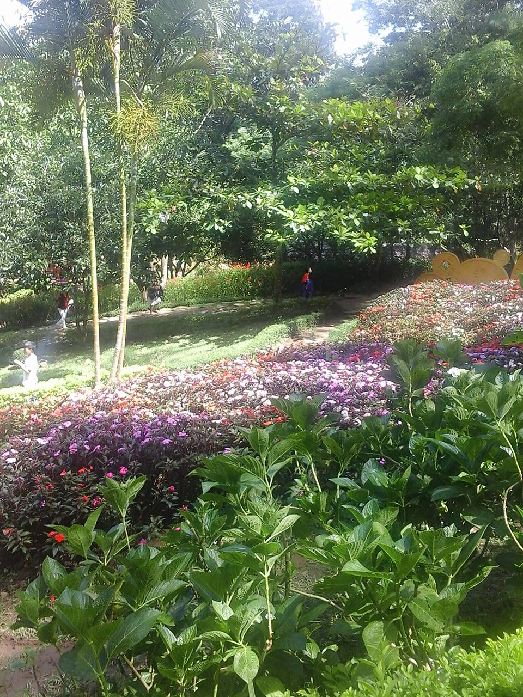

KHÁM PHÁ VIỆT NAM
HẠ LONG, VIỆT NAM HÌNH ẢNH MINH HỌA 01 / GIỚI THIỆUMột dải đất, nhiều cách để đi
TỪ BẮC VÀO NAM
Từ phố cổ Hà Nội đến biển Phú Quốc, một chuyến đi cho mọi miền.
Qua những con phố, dãy núi và miền biển, mỗi điểm dừng đều mở ra một góc nhìn khác về Việt Nam.
Bắt đầu hành trìnhKHÁM PHÁ TỪNG MIỀN02 / 05
02 / ĐIỂM ĐẾNBộ sưu tập bưu thiếp
NĂM ĐIỂM DỪNG
Các địa điểm du lịch nổi tiếng.
Từ nhịp phố Hà Nội đến trời biển Hạ Long, mở từng tấm bưu thiếp để chọn nơi bạn muốn đến.
Thứ tự Top 5 địa điểm bạn muốn đến. Kéo hoặc bấm phím mũi tên để lật xem.
TOP 5 / ĐỊA ĐIỂM BẠN MUỐN ĐẾN01 / 05


LẬT ĐỂ KHÁM PHÁ THÊM03 / 05
03 / BA MIỀNĐi dọc đất nước
MỖI MIỀN MỘT SẮC MÀU
Điểm dừng theo miền.
01 / MIỀN BẮC
Hà Nội · Hạ Long · Sa Pa
03 ĐỊA ĐIỂM02 / MIỀN TRUNG
Đà Nẵng · Hội An · Huế
03 ĐỊA ĐIỂM03 / MIỀN NAM
TP. Hồ Chí Minh · Vũng Tàu · Phú Quốc
03 ĐỊA ĐIỂMBA MIỀN / MỘT HÀNH TRÌNH04 / 05
04 / GỢI Ý MÙA ĐIMột chút cảm hứng lên đường
LÊN KẾ HOẠCH
Đi lúc nào đẹp?
Thời tiết thay đổi theo từng năm. Những gợi ý dưới đây chỉ để tham khảo trước khi bạn lên đường.
ĐỊA ĐIỂMMIỀNMÙA ĐẸPGỢI Ý
Hà NộiMiền BắcMùa thu, mùa xuânDạo phố, ăn món địa phương
Đà NẵngMiền TrungMùa khôDạo biển, ngắm bình minh
Hội AnMiền TrungMùa khôTản bộ phố cổ lúc chiều
Hạ LongMiền BắcMùa thu, mùa xuânNgắm vịnh từ trên thuyền
Đà LạtMiền NamMùa khôDạo quanh hồ, ngắm đồi
THAM KHẢO DỰ BÁO TRƯỚC KHI ĐI05 / 05
HẸN GẶP TRÊN ĐƯỜNG
Bạn muốn đến đâu trước?
Mỗi hành trình bắt đầu bằng một điểm dừng. Chọn nơi gọi tên bạn.